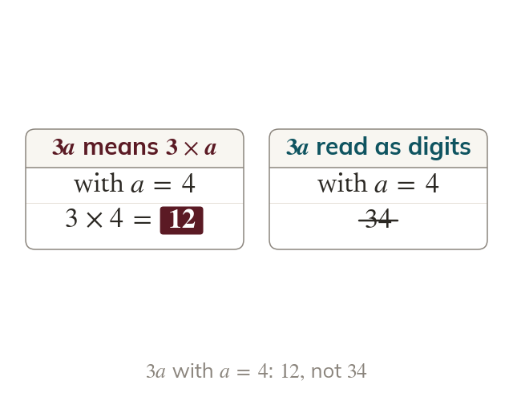

Undoing the shorthand
Substitution replaces each letter with its value, then evaluates. Never read as digits side by side: it means
Substitution replaces each letter with a given value, then evaluates. The algebraic conventions are undone as you substitute: means means means a divided by - none of these are ever read as digits written side by side.